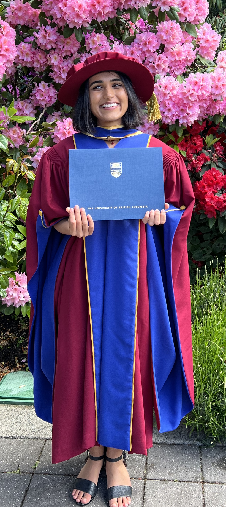
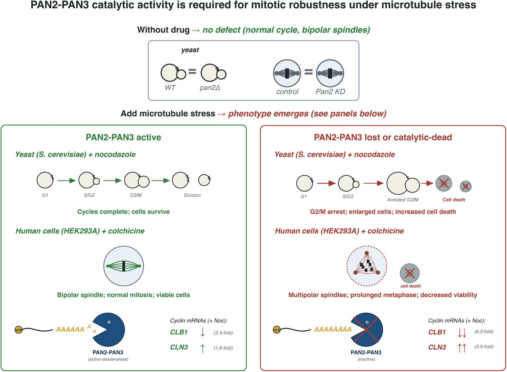
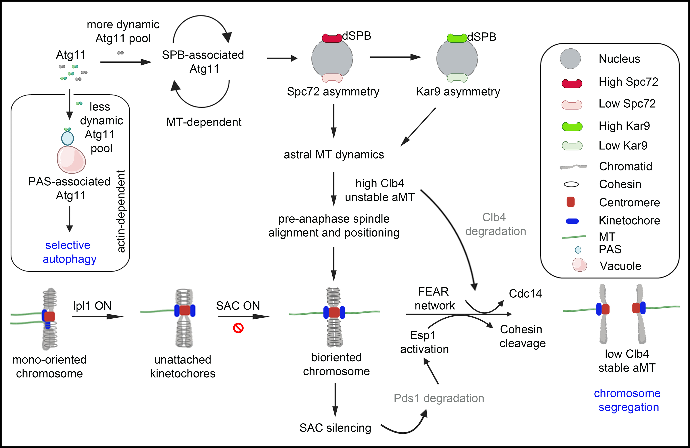

I work at the intersection of RNA biology, next-generation sequencing, and AI. I design experiments that generate ground-truth data for building and validating biological models, and I build systematic benchmarks that expose where those models fail.
At Stanford (Das Lab), I developed FAST-MaP, a rapid Nanopore-based pipeline for RNA chemical mapping released as a public web server, and transferred the technology to AI@HHMI to unlock training data for RNA structure models. I surveyed 13 RNA structure and translation-efficiency models spanning three architectural classes, designed biological experiments that isolated a specific structural mechanism, and demonstrated that no current model captures it.
Designed experiments testing 13 RNA/translation models across 3 architectural classes (thermodynamic, deep learning, sequence-to-expression); identified a structural repression mechanism that every tested model fails to predict.
Manuscript in preparationDeveloped a Nanopore-based RNA chemical mapping protocol that eliminates the need for sequencing infrastructure. Public web server deployed. Technology transferred to AI@HHMI for large-scale training data production. Invention disclosure under review by Stanford OTL.
Target: Nature ProtocolsFirst-author discovery that the PAN2-PAN3 deadenylase activity is selectively required for mitotic robustness under microtubule stress; demonstrated mechanism from yeast to human cells.
Under review: iScience (Cell Press)
Equal-contribution discovery that the autophagy-related protein Atg11 is required for high-fidelity chromosome segregation, revealing a non-canonical role at spindle pole bodies.
Published: PLOS Biology (2025)
cmuts.cmuts, a quantitative SHAPE data analysis pipeline, through RNA chemical probing experiments; collaborated to deploy a public web server.Systematic evaluation of RNA structure prediction models (EternaFold, RibonanzaNet, Orthrus, Optimus 5-Prime, RiboNN, UTR-LM, AIDO.RNA, Saluki, Borzoi); benchmark design across thermodynamic, deep-learning, and sequence-to-expression architectures
Python (pandas, NumPy, SciPy, matplotlib, scikit-image), R/Bioconductor, SHAPE data analysis (ShapeMapper2, cmuts), quantitative image analysis (ImageJ, CellProfiler, ZEN), GitHub
Oxford Nanopore long-read RNA sequencing (chemically modified base detection), Illumina sequencing, library preparation, RNA-seq
In vitro and in vivo chemical probing (2A3, DMS, SHAPE-MaP), RNA secondary structure mapping, IVT, protocol development, mRNA translation efficiency assays
CRISPR/Cas9, shRNA/siRNA, RT-qPCR, cloning, mutagenesis, flow cytometry, mammalian cell culture (HEK293A), yeast genetics (SGA screens)
Nanopore-based RNA chemical mapping pipeline. Licensing in progress; available upon request.
Quantitative SHAPE data analysis — cmuts on HuggingFace